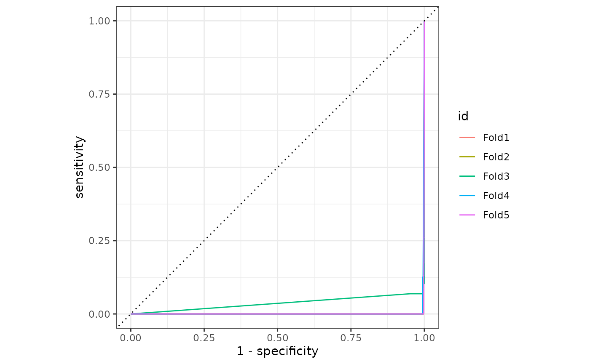
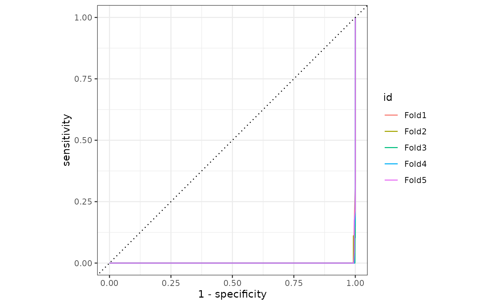
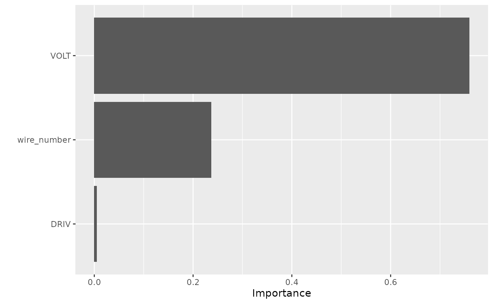
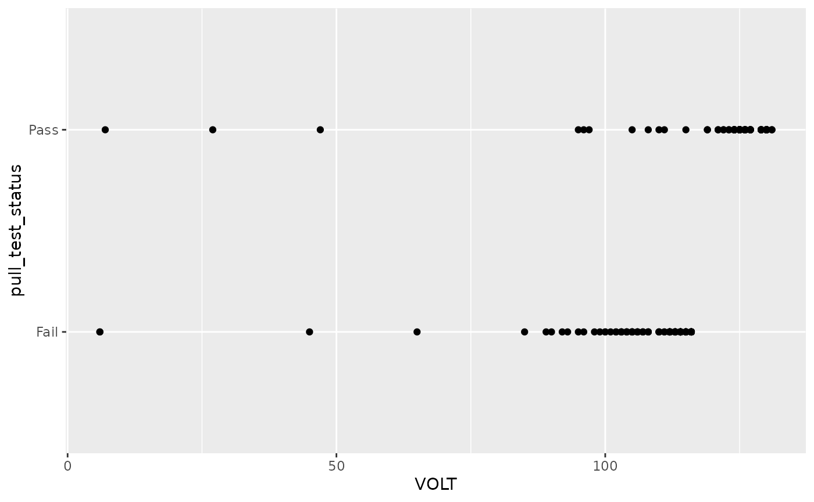
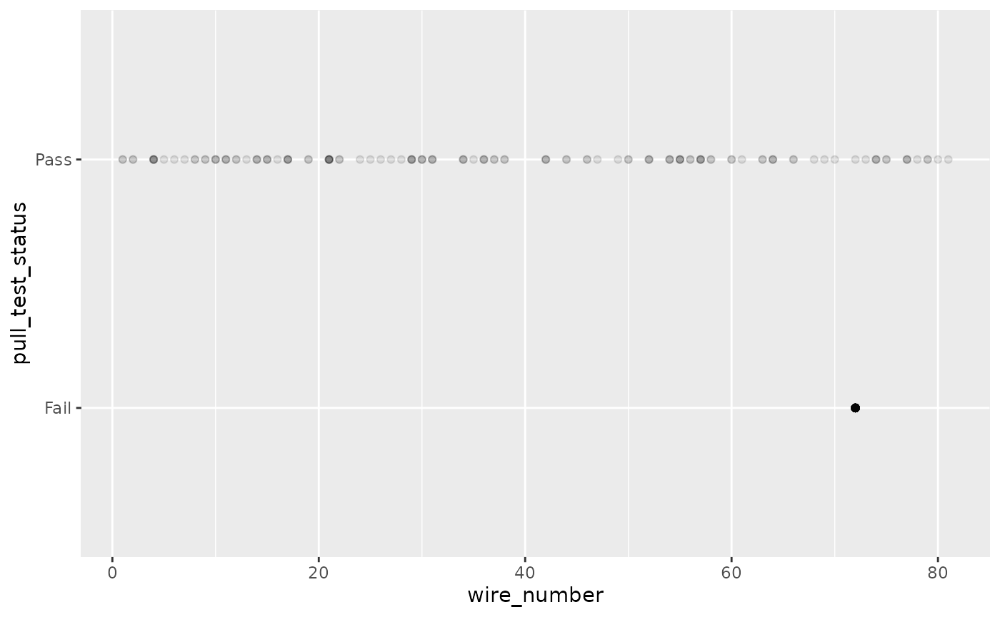
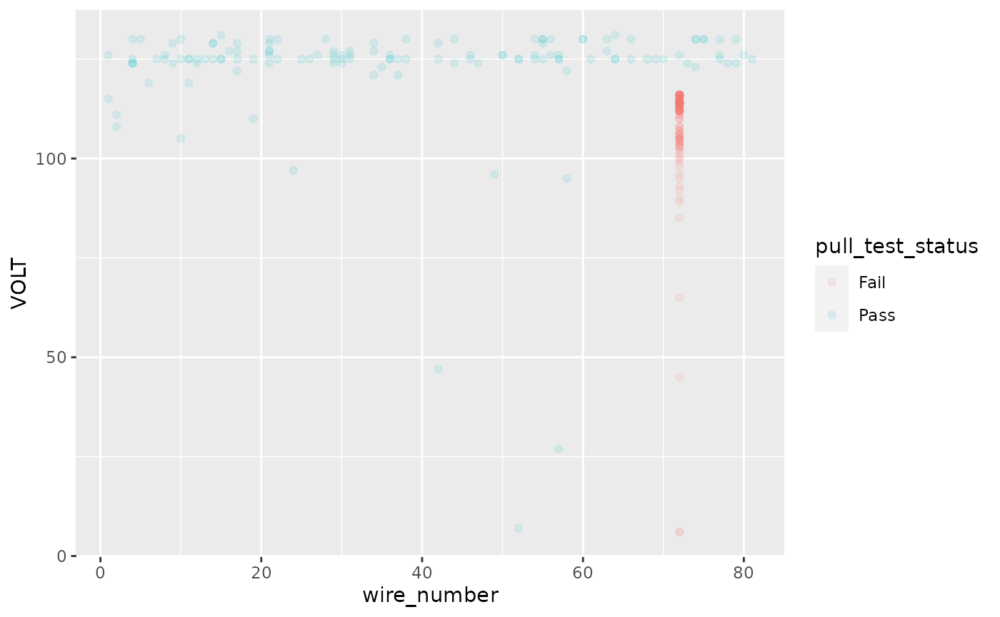

Intro.RmdAssume that there is a data science team working on developing a classification algorithm that at a Bond Object level can predict
PULL_TEST_STATUSbased on the time-series data in the Sample Objects. It is currently a very time-consuming task for this team to access the data they need. These JSON files land in a single directory on a Network File Share (NFS) and there are tens of thousands of files generated per day. Thus, this team can only get data for a specificBOND_GROUP_ID, for example, by loading data for a particular time range into memory and then filtering. They are looking to you to help provide a new way to access this data in a schema which facilitates their modeling efforts.
As a data engineer, I want to make it as easy as possible for the data science team to query data by timestamp for a given bond_group_id so they can predict the failure of pull_test_status given sample data and anticipate, identify, and eliminate failures.
Inputs:
Constraints:
Requirements:
A few ideas come to mind for how we’ll store the data:
Star Schema: Since our data are nested, we can create dimension tables for files and fact tables for bonds and samples.
files_table
- file_id
- file_* (metadata)
bonds_table
- file_id
- bond_id
- bond_* (metadata)
samples_table:
- (optional): file_id // optional bc each sample_id is unique to bond_id
- bond_id
- sample_id
- sample_* (metadata)Cons: Users would have to join the data to do their analysis. Joins can be messy (especially with time-series data).
Model-ready dataset: Prepare it for modeling (flat tables):
samples_table:
sample_id
bond_id
bond_metadata* (replicated each row per sample_id)
file_id
file_metadata (replicated each row per bond_id)Flat tables are easiest for doing machine learning. They’re inefficient for storage, however.
Other ideas:
A few storage approaches come to mind:
Pros/cons of database
Pros:
Cons:
Pros/cons of parquet files
Pros:
Cons:
Pros/cons of avro: similar to parquet, but more easily handles file systems which change schema over time.
Pros/cons of language-native file systems
Pros:
.Rda, .RDS and .fst file types (see post). That, and the data is efficiently stored if it’s going to be used specifically by R users.Cons:
I’ve decided to design using a few different design approaches (reviewed below). I wrote an R package to handle the data processing. The bonds package has multiple functions to help with ETL.
library(bonds)
#> Loading required package: arrow
#>
#> Attaching package: 'arrow'
#> The following object is masked from 'package:utils':
#>
#> timestamp
#> Loading required package: DBI
#> Loading required package: dplyr
#>
#> Attaching package: 'dplyr'
#> The following objects are masked from 'package:stats':
#>
#> filter, lag
#> The following objects are masked from 'package:base':
#>
#> intersect, setdiff, setequal, union
#> Loading required package: fs
#> Loading required package: glue
#>
#> Attaching package: 'glue'
#> The following object is masked from 'package:dplyr':
#>
#> collapse
#> Loading required package: logger
#> Loading required package: stringr
#> Loading required package: jsonlite
#> Loading required package: tidyjson
#>
#> Attaching package: 'tidyjson'
#> The following object is masked from 'package:jsonlite':
#>
#> read_json
#> Loading required package: tidyr
#> Loading required package: tictoc
#> Loading required package: RSQLite
#> Loading required package: pool
#> Loading required package: here
#> here() starts at /home/rstudio/tesla/bondsI created a function etl_all_files() that does the ELT:
Here are the logs for the output:
> etl_all_files()
[1] 1
INFO [2021-10-29 05:14:41] Parsing JSON
INFO [2021-10-29 05:14:44] Cleaning data
INFO [2021-10-29 05:14:45] Loading to sql
0.812 sec elapsed
INFO [2021-10-29 05:14:45] Save as pqt all
0.359 sec elapsed
INFO [2021-10-29 05:14:46] Save as pqt by group_id
0.426 sec elapsed
INFO [2021-10-29 05:14:46] Finished file1
[1] 2
INFO [2021-10-29 05:14:46] Parsing JSON
INFO [2021-10-29 05:14:49] Cleaning data
INFO [2021-10-29 05:14:49] Loading to sql
INFO [2021-10-29 05:14:49] Updating [data.files] from file 2
INFO [2021-10-29 05:14:49] Updating [data.bonds] from file 2
INFO [2021-10-29 05:14:49] Updating [data.samples] from file 2
0.5 sec elapsed
INFO [2021-10-29 05:14:50] Save as pqt all
0.2 sec elapsed
INFO [2021-10-29 05:14:50] Save as pqt by group_id
0.942 sec elapsed
INFO [2021-10-29 05:14:51] Finished file2[1] 3
INFO [2021-10-29 05:14:51] Parsing JSON
INFO [2021-10-29 05:14:54] Cleaning data
INFO [2021-10-29 05:14:54] Loading to sql
INFO [2021-10-29 05:14:54] Updating [data.files] from file 3
INFO [2021-10-29 05:14:54] Adding rework_trigger_msg AS TEXT to [data.bonds]
INFO [2021-10-29 05:14:54] Updating [data.bonds] from file 3
INFO [2021-10-29 05:14:54] Updating [data.samples] from file 3
0.522 sec elapsed
INFO [2021-10-29 05:14:55] Save as pqt all
0.191 sec elapsed
INFO [2021-10-29 05:14:55] Save as pqt by group_id
0.469 sec elapsed
INFO [2021-10-29 05:14:55] Finished file3
[1] 4
INFO [2021-10-29 05:14:55] Parsing JSON
INFO [2021-10-29 05:14:59] Cleaning data
INFO [2021-10-29 05:14:59] Loading to sql
INFO [2021-10-29 05:14:59] Updating [data.files] from file 4
INFO [2021-10-29 05:14:59] Updating [data.bonds] from file 4
INFO [2021-10-29 05:14:59] Updating [data.samples] from file 4
0.659 sec elapsed
INFO [2021-10-29 05:15:00] Save as pqt all
0.26 sec elapsed
INFO [2021-10-29 05:15:00] Save as pqt by group_id
0.536 sec elapsed
INFO [2021-10-29 05:15:01] Finished file4
[1] 5
INFO [2021-10-29 05:15:01] Parsing JSON
INFO [2021-10-29 05:15:04] Cleaning data
INFO [2021-10-29 05:15:04] Loading to sql
INFO [2021-10-29 05:15:04] Updating [data.files] from file 5
INFO [2021-10-29 05:15:04] Updating [data.bonds] from file 5
INFO [2021-10-29 05:15:04] Updating [data.samples] from file 5
0.385 sec elapsed
INFO [2021-10-29 05:15:04] Save as pqt all
0.123 sec elapsed
INFO [2021-10-29 05:15:04] Save as pqt by group_id
0.572 sec elapsed
INFO [2021-10-29 05:15:05] Finished file5
[1] 6
INFO [2021-10-29 05:15:05] Parsing JSON
INFO [2021-10-29 05:15:07] Cleaning data
INFO [2021-10-29 05:15:08] Loading to sql
INFO [2021-10-29 05:15:08] Updating [data.files] from file 6
INFO [2021-10-29 05:15:08] Updating [data.bonds] from file 6
INFO [2021-10-29 05:15:08] Updating [data.samples] from file 6
0.489 sec elapsed
INFO [2021-10-29 05:15:08] Save as pqt all
0.128 sec elapsed
INFO [2021-10-29 05:15:09] Save as pqt by group_id
0.412 sec elapsed
INFO [2021-10-29 05:15:09] Finished file6
[1] 7
INFO [2021-10-29 05:15:09] Parsing JSON
INFO [2021-10-29 05:15:11] Cleaning data
INFO [2021-10-29 05:15:11] Loading to sql
INFO [2021-10-29 05:15:11] Updating [data.files] from file 7
INFO [2021-10-29 05:15:11] Updating [data.bonds] from file 7
INFO [2021-10-29 05:15:11] Updating [data.samples] from file 7
0.355 sec elapsed
INFO [2021-10-29 05:15:12] Save as pqt all
0.098 sec elapsed
INFO [2021-10-29 05:15:12] Save as pqt by group_id
0.411 sec elapsed
INFO [2021-10-29 05:15:12] Finished file7
[1] 8
INFO [2021-10-29 05:15:12] Parsing JSON
INFO [2021-10-29 05:15:15] Cleaning data
INFO [2021-10-29 05:15:15] Loading to sql
INFO [2021-10-29 05:15:15] Updating [data.files] from file 8
INFO [2021-10-29 05:15:15] Updating [data.bonds] from file 8
INFO [2021-10-29 05:15:15] Updating [data.samples] from file 8
0.367 sec elapsed
INFO [2021-10-29 05:15:16] Save as pqt all
0.107 sec elapsed
INFO [2021-10-29 05:15:16] Save as pqt by group_id
0.47 sec elapsed
INFO [2021-10-29 05:15:16] Finished file8
[1] 9
INFO [2021-10-29 05:15:16] Parsing JSON
INFO [2021-10-29 05:15:20] Cleaning data
INFO [2021-10-29 05:15:20] Loading to sql
INFO [2021-10-29 05:15:20] Updating [data.files] from file 9
INFO [2021-10-29 05:15:20] Updating [data.bonds] from file 9
INFO [2021-10-29 05:15:20] Updating [data.samples] from file 9
0.462 sec elapsed
INFO [2021-10-29 05:15:20] Save as pqt all
0.206 sec elapsed
INFO [2021-10-29 05:15:21] Save as pqt by group_id
0.501 sec elapsed
INFO [2021-10-29 05:15:21] Finished file9
[1] 10
INFO [2021-10-29 05:15:21] Parsing JSON
INFO [2021-10-29 05:15:24] Cleaning data
INFO [2021-10-29 05:15:24] Loading to sql
INFO [2021-10-29 05:15:24] Updating [data.files] from file 10
INFO [2021-10-29 05:15:24] Updating [data.bonds] from file 10
INFO [2021-10-29 05:15:24] Updating [data.samples] from file 10
0.52 sec elapsed
INFO [2021-10-29 05:15:25] Save as pqt all
0.21 sec elapsed
INFO [2021-10-29 05:15:25] Save as pqt by group_id
0.469 sec elapsed
INFO [2021-10-29 05:15:25] Finished file10
[1] 11
INFO [2021-10-29 05:15:25] Parsing JSON
INFO [2021-10-29 05:15:28] Cleaning data
INFO [2021-10-29 05:15:28] Loading to sql
INFO [2021-10-29 05:15:28] Updating [data.files] from file 11
INFO [2021-10-29 05:15:28] Updating [data.bonds] from file 11
INFO [2021-10-29 05:15:28] Updating [data.samples] from file 11
0.409 sec elapsed
INFO [2021-10-29 05:15:29] Save as pqt all
0.21 sec elapsed
INFO [2021-10-29 05:15:29] Save as pqt by group_id
0.571 sec elapsed
INFO [2021-10-29 05:15:30] Finished file11
[1] 12
INFO [2021-10-29 05:15:30] Parsing JSON
INFO [2021-10-29 05:15:32] Cleaning data
INFO [2021-10-29 05:15:32] Loading to sql
INFO [2021-10-29 05:15:32] Updating [data.files] from file 12
INFO [2021-10-29 05:15:32] Updating [data.bonds] from file 12
INFO [2021-10-29 05:15:32] Updating [data.samples] from file 12
0.328 sec elapsed
INFO [2021-10-29 05:15:33] Save as pqt all
0.099 sec elapsed
INFO [2021-10-29 05:15:33] Save as pqt by group_id
0.447 sec elapsed
INFO [2021-10-29 05:15:33] Finished file12
[1] 13
INFO [2021-10-29 05:15:33] Parsing JSON
INFO [2021-10-29 05:15:37] Cleaning data
INFO [2021-10-29 05:15:37] Loading to sql
INFO [2021-10-29 05:15:37] Updating [data.files] from file 13
INFO [2021-10-29 05:15:37] Updating [data.bonds] from file 13
INFO [2021-10-29 05:15:37] Updating [data.samples] from file 13
0.476 sec elapsed
INFO [2021-10-29 05:15:37] Save as pqt all
0.144 sec elapsed
INFO [2021-10-29 05:15:37] Save as pqt by group_id
0.361 sec elapsed
INFO [2021-10-29 05:15:38] Finished file13
[1] 14
INFO [2021-10-29 05:15:38] Parsing JSON
INFO [2021-10-29 05:15:41] Cleaning data
INFO [2021-10-29 05:15:42] Loading to sql
INFO [2021-10-29 05:15:42] Updating [data.files] from file 14
INFO [2021-10-29 05:15:42] Updating [data.bonds] from file 14
INFO [2021-10-29 05:15:42] Updating [data.samples] from file 14
0.539 sec elapsed
INFO [2021-10-29 05:15:42] Save as pqt all
0.114 sec elapsed
INFO [2021-10-29 05:15:42] Save as pqt by group_id
0.69 sec elapsed
INFO [2021-10-29 05:15:43] Finished file14
[1] 15
INFO [2021-10-29 05:15:43] Parsing JSON
INFO [2021-10-29 05:15:46] Cleaning data
INFO [2021-10-29 05:15:46] Loading to sql
INFO [2021-10-29 05:15:46] Updating [data.files] from file 15
INFO [2021-10-29 05:15:46] Updating [data.bonds] from file 15
INFO [2021-10-29 05:15:46] Updating [data.samples] from file 15
0.374 sec elapsed
INFO [2021-10-29 05:15:47] Save as pqt all
0.113 sec elapsed
INFO [2021-10-29 05:15:47] Save as pqt by group_id
0.399 sec elapsed
INFO [2021-10-29 05:15:47] Finished file15There are two schemas:
files, bonds, and samples table. This is saved out as both sqlite and parquetbonds is joined to samples
Set up SQL connection for star schema:
db_path = here::here('output/data.db')
# pool <- dbPool(RSQLite::SQLite(), db=db_path)
con <- DBI::dbConnect(RSQLite::SQLite(), db=db_path)Explore schema of tables:
dbGetQuery(con, 'PRAGMA table_info(files)')
#> cid name type notnull dflt_value pk
#> 1 0 file_id INTEGER 0 NA 0
#> 2 1 start_date_time REAL 0 NA 0
#> 3 2 uut_serial_number TEXT 0 NA 0
#> 4 3 station_id TEXT 0 NA 0
#> 5 4 bond_count INTEGER 0 NA 0
dbGetQuery(con, 'PRAGMA table_info(bonds)')
#> cid name type notnull dflt_value pk
#> 1 0 file_id INTEGER 0 NA 0
#> 2 1 bond_id INTEGER 0 NA 0
#> 3 2 process_program TEXT 0 NA 0
#> 4 3 zone_number INTEGER 0 NA 0
#> 5 4 wire_number INTEGER 0 NA 0
#> 6 5 bond_number INTEGER 0 NA 0
#> 7 6 bond_group_id TEXT 0 NA 0
#> 8 7 date_time REAL 0 NA 0
#> 9 8 wire_feed INTEGER 0 NA 0
#> 10 9 pull_test_status TEXT 0 NA 0
#> 11 10 program_rev TEXT 0 NA 0
#> 12 11 cell_id_mod TEXT 0 NA 0
#> 13 12 brick_id_mod INTEGER 0 NA 0
#> 14 13 cell_polarity TEXT 0 NA 0
#> 15 14 cp_id_mod TEXT 0 NA 0
#> 16 15 trace_sample_count INTEGER 0 NA 0
#> 17 16 rework_trigger_msg TEXT 0 NA 0
dbGetQuery(con, 'PRAGMA table_info(samples)')
#> cid name type notnull dflt_value pk
#> 1 0 file_id INTEGER 0 NA 0
#> 2 1 bond_id INTEGER 0 NA 0
#> 3 2 sample INTEGER 0 NA 0
#> 4 3 dfrm REAL 0 NA 0
#> 5 4 driv INTEGER 0 NA 0
#> 6 5 freq REAL 0 NA 0
#> 7 6 phas REAL 0 NA 0
#> 8 7 us INTEGER 0 NA 0
#> 9 8 volt INTEGER 0 NA 0
#> 10 9 alcpt REAL 0 NA 0You can write SQL to read the data directly:
select *
from files
limit 10| file_id | start_date_time | uut_serial_number | station_id | bond_count |
|---|---|---|---|---|
| 1 | 1452089076 | 097192 | M364110709 | 888 |
| 2 | 1452227457 | 103118 | M364111210 | 888 |
| 3 | 1453450925 | 145928 | M364111202 | 888 |
| 4 | 1452404389 | 108025 | M364111210 | 888 |
| 5 | 1452100148 | 097231 | M364111107 | 888 |
| 6 | 1453361125 | 144167 | M364120804 | 888 |
| 7 | 1452534748 | 103279 | AST215060003 | 888 |
| 8 | 1452539268 | 111696 | M362100702 | 888 |
| 9 | 1453295399 | 143550 | M364111205 | 888 |
| 10 | 1452120372 | 097298 | M364111205 | 888 |
I saved the star schema out as a parquet files, one parquet file per file_id. There are 15 files per bonds/, files/ and samples/ folders.
dir_output <- "/home/rstudio/tesla/bonds/output"
dir_pqt <- here::here(dir_output, "pqt")
dir_pqt_all <- here::here(dir_pqt, "all")
dir_pqt_grpid <- here::here(dir_pqt, "grpid")
fs::dir_ls(dir_pqt_all)
#> /home/rstudio/tesla/bonds/output/pqt/all/bonds
#> /home/rstudio/tesla/bonds/output/pqt/all/files
#> /home/rstudio/tesla/bonds/output/pqt/all/samplesInspecting the files folder:
fs::dir_ls(fs::path(dir_pqt_all, 'files'))
#> /home/rstudio/tesla/bonds/output/pqt/all/files/part-00001.parquet
#> /home/rstudio/tesla/bonds/output/pqt/all/files/part-00002.parquet
#> /home/rstudio/tesla/bonds/output/pqt/all/files/part-00003.parquet
#> /home/rstudio/tesla/bonds/output/pqt/all/files/part-00004.parquet
#> /home/rstudio/tesla/bonds/output/pqt/all/files/part-00005.parquet
#> /home/rstudio/tesla/bonds/output/pqt/all/files/part-00006.parquet
#> /home/rstudio/tesla/bonds/output/pqt/all/files/part-00007.parquet
#> /home/rstudio/tesla/bonds/output/pqt/all/files/part-00008.parquet
#> /home/rstudio/tesla/bonds/output/pqt/all/files/part-00009.parquet
#> /home/rstudio/tesla/bonds/output/pqt/all/files/part-00010.parquet
#> /home/rstudio/tesla/bonds/output/pqt/all/files/part-00011.parquet
#> /home/rstudio/tesla/bonds/output/pqt/all/files/part-00012.parquet
#> /home/rstudio/tesla/bonds/output/pqt/all/files/part-00013.parquet
#> /home/rstudio/tesla/bonds/output/pqt/all/files/part-00014.parquet
#> /home/rstudio/tesla/bonds/output/pqt/all/files/part-00015.parquetI wrote a function to read the parquet files:
load_pqt(dir_pqt_all, 'files')
#> # A tibble: 15 × 5
#> file_id start_date_time uut_serial_number station_id bond_count
#> <int> <dttm> <chr> <chr> <int>
#> 1 1 2016-01-06 14:04:36 097192 M364110709 888
#> 2 2 2016-01-08 04:30:57 103118 M364111210 888
#> 3 3 2016-01-22 08:22:05 145928 M364111202 888
#> 4 4 2016-01-10 05:39:49 108025 M364111210 888
#> 5 5 2016-01-06 17:09:08 097231 M364111107 888
#> 6 6 2016-01-21 07:25:25 144167 M364120804 888
#> 7 7 2016-01-11 17:52:28 103279 AST215060003 888
#> 8 8 2016-01-11 19:07:48 111696 M362100702 888
#> 9 9 2016-01-20 13:09:59 143550 M364111205 888
#> 10 10 2016-01-06 22:46:12 097298 M364111205 888
#> 11 11 2016-01-21 21:58:52 148533 M364111204 888
#> 12 12 2016-01-29 13:42:09 156205 AST215060001 888
#> 13 13 2016-01-20 13:04:16 143581 M364111107 888
#> 14 14 2016-01-26 01:07:40 148985 M364111209 889
#> 15 15 2016-01-29 12:27:41 167333 M364110707 888I also wrote an interface to allow the readers to filter the parquet files based on the file name. If I rename the parquet files based on the datetime of the file_id, this would enable the data scientists to filter to the time range very easily.
load_pqt(dir_pqt_all, 'files', range=4:7)
#> # A tibble: 4 × 5
#> file_id start_date_time uut_serial_number station_id bond_count
#> <int> <dttm> <chr> <chr> <int>
#> 1 4 2016-01-10 05:39:49 108025 M364111210 888
#> 2 5 2016-01-06 17:09:08 097231 M364111107 888
#> 3 6 2016-01-21 07:25:25 144167 M364120804 888
#> 4 7 2016-01-11 17:52:28 103279 AST215060003 888Read in the bonds table:
df_bonds <- load_pqt(dir_pqt_all, 'bonds')
df_bonds %>%
head()
#> # A tibble: 6 × 17
#> file_id bond_id process_program zone_number wire_number bond_number
#> <int> <int> <chr> <int> <int> <int>
#> 1 1 1 Z06_TS_FP_KS_3600_1_1_4 6 1 1
#> 2 1 9 Z06_TS_FP_KS_3600_1_1_4 6 1 2
#> 3 1 17 Z06_TS_FP_KS_3600_1_1_4 6 2 1
#> 4 1 25 Z06_TS_FP_KS_3600_1_1_4 6 2 2
#> 5 1 33 Z06_TS_FP_KS_3600_1_1_4 6 3 1
#> 6 1 41 Z06_TS_FP_KS_3600_1_1_4 6 3 2
#> # … with 11 more variables: bond_group_id <chr>, date_time <dttm>,
#> # wire_feed <int>, pull_test_status <chr>, program_rev <chr>,
#> # cell_id_mod <chr>, brick_id_mod <int>, cell_polarity <chr>,
#> # cp_id_mod <chr>, trace_sample_count <int>, rework_trigger_msg <chr>If the DS team cares to model a specific group_id with samples, I partitioned the files by group_id in output/pqt/grpid/<group_id>:
fs::dir_ls(dir_pqt_grpid)
#> /home/rstudio/tesla/bonds/output/pqt/grpid/12mil_CP
#> /home/rstudio/tesla/bonds/output/pqt/grpid/Anode-OPT3-300(12)
#> /home/rstudio/tesla/bonds/output/pqt/grpid/Anode_V313_V3_Minus
#> /home/rstudio/tesla/bonds/output/pqt/grpid/CP-Rev3-300(12)
#> /home/rstudio/tesla/bonds/output/pqt/grpid/Cathode-Rev3-300(12)
#> /home/rstudio/tesla/bonds/output/pqt/grpid/Cathode_V313_V2_Minus
#> /home/rstudio/tesla/bonds/output/pqt/grpid/Ni-CP-Rev6-300(12)For example, you can see how some file_ids contained a group_id and others didn’t:
fs::dir_ls(dir_pqt_grpid, recurse=T) %>%
head(10)
#> /home/rstudio/tesla/bonds/output/pqt/grpid/12mil_CP
#> /home/rstudio/tesla/bonds/output/pqt/grpid/12mil_CP/part-00007.parquet
#> /home/rstudio/tesla/bonds/output/pqt/grpid/12mil_CP/part-00012.parquet
#> /home/rstudio/tesla/bonds/output/pqt/grpid/Anode-OPT3-300(12)
#> /home/rstudio/tesla/bonds/output/pqt/grpid/Anode-OPT3-300(12)/part-00001.parquet
#> /home/rstudio/tesla/bonds/output/pqt/grpid/Anode-OPT3-300(12)/part-00002.parquet
#> /home/rstudio/tesla/bonds/output/pqt/grpid/Anode-OPT3-300(12)/part-00003.parquet
#> /home/rstudio/tesla/bonds/output/pqt/grpid/Anode-OPT3-300(12)/part-00004.parquet
#> /home/rstudio/tesla/bonds/output/pqt/grpid/Anode-OPT3-300(12)/part-00005.parquet
#> /home/rstudio/tesla/bonds/output/pqt/grpid/Anode-OPT3-300(12)/part-00006.parquetThe data scientists can easily load in all the samples for a bond_id. This table replicates the metadata for each bond_id across each trace sample. This makes the data easily to model.
load_pqt(dir_root=dir_pqt_grpid, tab='12mil_CP') %>%
head(20)
#> # A tibble: 20 × 24
#> file_id bond_id process_program zone_number wire_number bond_number
#> <int> <int> <chr> <int> <int> <int>
#> 1 7 8 NTS_2000CELL_KS_ASTERION… 99 1 2
#> 2 7 8 NTS_2000CELL_KS_ASTERION… 99 1 2
#> 3 7 8 NTS_2000CELL_KS_ASTERION… 99 1 2
#> 4 7 8 NTS_2000CELL_KS_ASTERION… 99 1 2
#> 5 7 8 NTS_2000CELL_KS_ASTERION… 99 1 2
#> 6 7 8 NTS_2000CELL_KS_ASTERION… 99 1 2
#> 7 7 8 NTS_2000CELL_KS_ASTERION… 99 1 2
#> 8 7 8 NTS_2000CELL_KS_ASTERION… 99 1 2
#> 9 7 8 NTS_2000CELL_KS_ASTERION… 99 1 2
#> 10 7 8 NTS_2000CELL_KS_ASTERION… 99 1 2
#> 11 7 8 NTS_2000CELL_KS_ASTERION… 99 1 2
#> 12 7 8 NTS_2000CELL_KS_ASTERION… 99 1 2
#> 13 7 8 NTS_2000CELL_KS_ASTERION… 99 1 2
#> 14 7 8 NTS_2000CELL_KS_ASTERION… 99 1 2
#> 15 7 8 NTS_2000CELL_KS_ASTERION… 99 1 2
#> 16 7 8 NTS_2000CELL_KS_ASTERION… 99 1 2
#> 17 7 8 NTS_2000CELL_KS_ASTERION… 99 1 2
#> 18 7 8 NTS_2000CELL_KS_ASTERION… 99 1 2
#> 19 7 8 NTS_2000CELL_KS_ASTERION… 99 1 2
#> 20 7 8 NTS_2000CELL_KS_ASTERION… 99 1 2
#> # … with 18 more variables: bond_group_id <chr>, date_time <dttm>,
#> # wire_feed <int>, pull_test_status <chr>, program_rev <chr>,
#> # cell_id_mod <chr>, brick_id_mod <int>, cell_polarity <chr>,
#> # cp_id_mod <chr>, trace_sample_count <int>, SAMPLE <int>, DFRM <dbl>,
#> # DRIV <int>, FREQ <dbl>, PHAS <dbl>, US <int>, VOLT <int>, ALCPT <dbl>The following snippets explore the star schema data:
df_bonds <- load_pqt(dir_root = dir_pqt_all, 'bonds')
df_samples <- load_pqt(dir_root = dir_pqt_all, 'samples')
# 7 bond_group_ids
df_bonds %>%
summarize(n_distinct(bond_group_id))
#> # A tibble: 1 × 1
#> `n_distinct(bond_group_id)`
#> <int>
#> 1 7
# sample: need to up/downsample
# filter to the failed samples, save those in one file
# extreme class imbalance
df_bonds %>%
count(pull_test_status)
#> # A tibble: 2 × 2
#> pull_test_status n
#> <chr> <int>
#> 1 Fail 1
#> 2 Pass 13320
# there are 3548 bonds
df_bonds %>%
summarize(n_distinct(bond_id))
#> # A tibble: 1 × 1
#> `n_distinct(bond_id)`
#> <int>
#> 1 3548
# there are up to 4600 samples per bond_id.
df_samples %>%
count(bond_id, sort=T)
#> # A tibble: 3,548 × 2
#> bond_id n
#> <int> <int>
#> 1 1408 4645
#> 2 1628 4550
#> 3 1562 4295
#> 4 1342 4200
#> 5 1364 4200
#> 6 1386 4200
#> 7 1430 4200
#> 8 1452 4200
#> 9 1474 4200
#> 10 1496 4200
#> # … with 3,538 more rows
# what's the relationship between bonds and samples?
# multiple bond_ids
df_bonds %>%
group_by(bond_group_id) %>%
summarize(n_distinct(bond_id))
#> # A tibble: 7 × 2
#> bond_group_id `n_distinct(bond_id)`
#> <chr> <int>
#> 1 12mil_CP 888
#> 2 Anode_V313_V3_Minus 433
#> 3 Anode-OPT3-300(12) 758
#> 4 Cathode_V313_V2_Minus 430
#> 5 Cathode-Rev3-300(12) 690
#> 6 CP-Rev3-300(12) 1247
#> 7 Ni-CP-Rev6-300(12) 228
# what's the primary key of the bonds table?
# file_id, bond_id
count(df_bonds)
#> # A tibble: 1 × 1
#> n
#> <int>
#> 1 13321
df_bonds %>%
distinct(file_id, bond_id) %>%
count()
#> # A tibble: 1 × 1
#> n
#> <int>
#> 1 13321
# what is the primary key of bonds table without file_id?
# bond_id, bond_group_id, and date_time make a PK
df_bonds %>%
distinct(bond_id, bond_group_id, date_time) %>%
count()
#> # A tibble: 1 × 1
#> n
#> <int>
#> 1 13321This section shows how a DS could model the data using the schema I’ve provided.
There are two simple ways to model the data:
Upon inspecting the data, it appears there’s severe class imbalance (only one Fail per 13321 bonds). This data would be nearly impossible to model as is, so either we’d need to gather more data or would have to do up-sample the samples for the Fail status, downsample the samples for the Pass status, or some mixture of both.
Since only Ni-CP-Rev6-300(12) has a Fail test status, we’ll build a model on that group_id.
df_bonds %>%
filter(pull_test_status == 'Fail') %>%
pull(bond_group_id)
#> [1] "Ni-CP-Rev6-300(12)"Load data:
df_ni <- load_pqt(dir_root = dir_pqt_grpid, tab='Ni-CP-Rev6-300(12)')There are 189 trace samples with label pull_test_status=Fail.
df_ni %>%
group_by(pull_test_status) %>%
count()
#> # A tibble: 2 × 2
#> # Groups: pull_test_status [2]
#> pull_test_status n
#> <chr> <int>
#> 1 Fail 189
#> 2 Pass 326403I perform classification with tidymodels, comparing both logistic regression (glm) with decision trees (xgboost). I query only a few numeric variables to keep things simple:
library(tidymodels)
#> Registered S3 method overwritten by 'tune':
#> method from
#> required_pkgs.model_spec parsnip
#> ── Attaching packages ────────────────────────────────────── tidymodels 0.1.4 ──
#> ✓ broom 0.7.9 ✓ recipes 0.1.17
#> ✓ dials 0.0.10 ✓ rsample 0.1.0
#> ✓ ggplot2 3.3.5 ✓ tibble 3.1.5
#> ✓ infer 1.0.0 ✓ tune 0.1.6
#> ✓ modeldata 0.1.1 ✓ workflows 0.2.4
#> ✓ parsnip 0.1.7 ✓ workflowsets 0.1.0
#> ✓ purrr 0.3.4 ✓ yardstick 0.0.8
#> ── Conflicts ───────────────────────────────────────── tidymodels_conflicts() ──
#> x glue::collapse() masks dplyr::collapse()
#> x purrr::discard() masks scales::discard()
#> x dplyr::filter() masks stats::filter()
#> x recipes::fixed() masks stringr::fixed()
#> x purrr::flatten() masks jsonlite::flatten()
#> x dplyr::lag() masks stats::lag()
#> x recipes::step() masks stats::step()
#> • Use suppressPackageStartupMessages() to eliminate package startup messages
library(xgboost)
#>
#> Attaching package: 'xgboost'
#> The following object is masked from 'package:dplyr':
#>
#> slice
# Convert pull_test_status to be 0-1
df_model <- df_ni %>%
mutate(
pull_test_status = as.factor(pull_test_status)
) %>%
select(
pull_test_status,
zone_number,
wire_number,
DRIV,
PHAS,
VOLT)
# explore distribution of the target variable
with(df_model, table(pull_test_status))
#> pull_test_status
#> Fail Pass
#> 189 326403
set.seed(100)
# Put 3/4 of the data into the training set
data_split <- initial_split(df_model,
prop = .7,
strata = pull_test_status)
# Create dataframes for the two sets:
train_data <- training(data_split)
test_data <- testing(data_split)
# specify target variable and training data
# Downsample the data: https://themis.tidymodels.org/reference/step_downsample.html
# recipes are for how data will be modeled and processed
y_recipe <- recipe(pull_test_status ~ ., data = train_data) %>%
themis::step_downsample(pull_test_status, under_ratio = 1)
#> Registered S3 methods overwritten by 'themis':
#> method from
#> bake.step_downsample recipes
#> bake.step_upsample recipes
#> prep.step_downsample recipes
#> prep.step_upsample recipes
#> tidy.step_downsample recipes
#> tidy.step_upsample recipes
#> tunable.step_downsample recipes
#> tunable.step_upsample recipes
# ensure downsampling is done right: this proves i sampled
# a small number of Pass variables
y_recipe %>%
prep(training = train_data, retain = TRUE) %>%
bake(new_data = NULL) %>%
with(., table(pull_test_status))
#> pull_test_status
#> Fail Pass
#> 129 129
# Specify model types
mod_glm <- logistic_reg() %>%
set_engine('glm') %>%
set_mode('classification')
# fit a model with downsampeld data
downsampled_data <- y_recipe %>%
prep(training = train_data, retain=T) %>%
bake(new_data=NULL)
mod_glm %>%
fit(pull_test_status ~ ., data=downsampled_data)
#> Warning: glm.fit: algorithm did not converge
#> Warning: glm.fit: fitted probabilities numerically 0 or 1 occurred
#> parsnip model object
#>
#> Fit time: 12ms
#>
#> Call: stats::glm(formula = pull_test_status ~ ., family = stats::binomial,
#> data = data)
#>
#> Coefficients:
#> (Intercept) zone_number wire_number DRIV PHAS VOLT
#> 233.2565 -23.5407 -0.7302 -0.7556 -14.9039 6.3849
#>
#> Degrees of Freedom: 257 Total (i.e. Null); 252 Residual
#> Null Deviance: 357.7
#> Residual Deviance: 1.184e-08 AIC: 12Compare GLM to XGB:
# Specify model types
mod_glm <- logistic_reg() %>%
set_engine('glm') %>%
set_mode('classification')
mod_xgb <- boost_tree() %>%
set_engine("xgboost") %>%
set_mode("classification")
# Create the workflows
wflow_glm <- workflow() %>%
add_recipe(y_recipe) %>%
add_model(mod_glm)
wflow_xgb <- workflow() %>%
add_recipe(y_recipe) %>%
add_model(mod_xgb)
# Define cross-validation
cv_folds <- vfold_cv(train_data, v = 5, strata = pull_test_status)
# Model the data, saving out the resutls
results_glm <-
wflow_glm %>%
fit_resamples(
resamples = cv_folds,
metrics = metric_set(
recall, precision, f_meas,
accuracy, kap,
roc_auc, sens, spec),
control = control_resamples(
save_pred = TRUE)
)
#> ! Fold1: preprocessor 1/1, model 1/1: glm.fit: algorithm did not converge, glm.fi...
#> ! Fold2: preprocessor 1/1, model 1/1: glm.fit: algorithm did not converge, glm.fi...
#> ! Fold3: preprocessor 1/1, model 1/1: glm.fit: algorithm did not converge, glm.fi...
#> ! Fold4: preprocessor 1/1, model 1/1: glm.fit: algorithm did not converge, glm.fi...
#> ! Fold5: preprocessor 1/1, model 1/1: glm.fit: algorithm did not converge, glm.fi...
# results_glm$.notes %>% as.character()
results_xgb <- wflow_xgb %>%
fit_resamples(
resamples = cv_folds,
metrics = metric_set(
recall, precision, f_meas,
accuracy, kap,
roc_auc, sens, spec),
control = control_resamples(
save_pred = TRUE)
)
# results_xgb$.notes %>% as.character()GLM/XGBoost results - both models seem comparable, but seem suspiciously good:
results_glm %>%
collect_metrics()
#> # A tibble: 8 × 6
#> .metric .estimator mean n std_err .config
#> <chr> <chr> <dbl> <int> <dbl> <chr>
#> 1 accuracy binary 0.991 5 0.00271 Preprocessor1_Model1
#> 2 f_meas binary 0.136 5 0.0356 Preprocessor1_Model1
#> 3 kap binary 0.135 5 0.0356 Preprocessor1_Model1
#> 4 precision binary 0.0751 5 0.0215 Preprocessor1_Model1
#> 5 recall binary 0.986 5 0.0138 Preprocessor1_Model1
#> 6 roc_auc binary 0.991 5 0.00694 Preprocessor1_Model1
#> 7 sens binary 0.986 5 0.0138 Preprocessor1_Model1
#> 8 spec binary 0.991 5 0.00271 Preprocessor1_Model1
results_xgb %>%
collect_metrics()
#> # A tibble: 8 × 6
#> .metric .estimator mean n std_err .config
#> <chr> <chr> <dbl> <int> <dbl> <chr>
#> 1 accuracy binary 0.988 5 0.00146 Preprocessor1_Model1
#> 2 f_meas binary 0.0920 5 0.0164 Preprocessor1_Model1
#> 3 kap binary 0.0910 5 0.0164 Preprocessor1_Model1
#> 4 precision binary 0.0485 5 0.00906 Preprocessor1_Model1
#> 5 recall binary 1 5 0 Preprocessor1_Model1
#> 6 roc_auc binary 0.999 5 0.000184 Preprocessor1_Model1
#> 7 sens binary 1 5 0 Preprocessor1_Model1
#> 8 spec binary 0.988 5 0.00146 Preprocessor1_Model1Assess predictions - we notice a lot of overfitting in the model. There’s like a single feature driving everything (sign of feature leakage):
preds_glm <- results_glm %>%
collect_predictions()
preds_xgb <- results_xgb %>%
collect_predictions()
preds_glm %>%
conf_mat(pull_test_status, .pred_class)
#> Truth
#> Prediction Fail Pass
#> Fail 127 2111
#> Pass 2 226374
# GBM predicts 100% of the failed classes (likely overfit)
preds_xgb %>%
conf_mat(pull_test_status, .pred_class)
#> Truth
#> Prediction Fail Pass
#> Fail 129 2745
#> Pass 0 225740
# Roc Curves is upside down (likely because of some bug with how
# the target variable is labeled)
preds_glm %>%
group_by(id) %>%
roc_curve(pull_test_status, .pred_Pass) %>%
autoplot()
# ROC curve
preds_xgb %>%
group_by(id) %>%
roc_curve(pull_test_status, .pred_Pass) %>%
autoplot()
Let’s see what features come up as important when we train on the full data and predict on a test set.
last_fit_xgb <- last_fit(wflow_xgb,
split = data_split,
metrics = metric_set(
recall, precision, f_meas,
accuracy, kap,
roc_auc, sens, spec)
)
# Prediction metrics look good
last_fit_xgb %>%
collect_metrics()
#> # A tibble: 8 × 4
#> .metric .estimator .estimate .config
#> <chr> <chr> <dbl> <chr>
#> 1 recall binary 1 Preprocessor1_Model1
#> 2 precision binary 0.0408 Preprocessor1_Model1
#> 3 f_meas binary 0.0783 Preprocessor1_Model1
#> 4 accuracy binary 0.986 Preprocessor1_Model1
#> 5 kap binary 0.0772 Preprocessor1_Model1
#> 6 sens binary 1 Preprocessor1_Model1
#> 7 spec binary 0.986 Preprocessor1_Model1
#> 8 roc_auc binary 0.999 Preprocessor1_Model1
# Explore
last_fit_xgb %>%
collect_predictions() %>%
conf_mat(pull_test_status, .pred_class)
#> Truth
#> Prediction Fail Pass
#> Fail 60 1412
#> Pass 0 96506
# Explore feature importance
library(vip)
#>
#> Attaching package: 'vip'
#> The following object is masked from 'package:utils':
#>
#> vi
last_fit_xgb %>%
pluck(".workflow", 1) %>%
extract_fit_parsnip() %>%
vip(num_features = 20)
Volt is the top predictor. There’s likely something about volt and wire number that’s driving “perfect” predictions. Let’s look at the distribution of VOLT compared to the target variable.
# downsampled data is the train data
downsampled_data %>%
group_by(pull_test_status) %>%
skimr::skim()| Name | Piped data |
| Number of rows | 258 |
| Number of columns | 6 |
| _______________________ | |
| Column type frequency: | |
| numeric | 5 |
| ________________________ | |
| Group variables | pull_test_status |
Variable type: numeric
| skim_variable | pull_test_status | n_missing | complete_rate | mean | sd | p0 | p25 | p50 | p75 | p100 | hist |
|---|---|---|---|---|---|---|---|---|---|---|---|
| zone_number | Fail | 0 | 1 | 4.00 | 0.00 | 4.00 | 4 | 4 | 4 | 4.00 | ▁▁▇▁▁ |
| zone_number | Pass | 0 | 1 | 2.56 | 1.29 | 1.00 | 1 | 2 | 4 | 4.00 | ▅▆▁▁▇ |
| wire_number | Fail | 0 | 1 | 72.00 | 0.00 | 72.00 | 72 | 72 | 72 | 72.00 | ▁▁▇▁▁ |
| wire_number | Pass | 0 | 1 | 37.67 | 23.66 | 1.00 | 17 | 35 | 57 | 81.00 | ▇▆▅▆▅ |
| DRIV | Fail | 0 | 1 | 1090.91 | 132.66 | 204.00 | 1125 | 1125 | 1125 | 1125.00 | ▁▁▁▁▇ |
| DRIV | Pass | 0 | 1 | 1097.05 | 118.58 | 204.00 | 1125 | 1125 | 1125 | 1125.00 | ▁▁▁▁▇ |
| PHAS | Fail | 0 | 1 | -0.05 | 0.18 | -0.49 | 0 | 0 | 0 | 0.49 | ▁▁▇▁▁ |
| PHAS | Pass | 0 | 1 | 0.01 | 0.21 | -1.47 | 0 | 0 | 0 | 0.49 | ▁▁▁▇▁ |
| VOLT | Fail | 0 | 1 | 107.75 | 15.94 | 6.00 | 106 | 113 | 114 | 116.00 | ▁▁▁▁▇ |
| VOLT | Pass | 0 | 1 | 122.57 | 16.18 | 7.00 | 125 | 125 | 127 | 131.00 | ▁▁▁▁▇ |
ggplot(downsampled_data, aes(x = VOLT, y = pull_test_status)) +
geom_point()
# wire number is driving the prediction
ggplot(downsampled_data,
aes(x = wire_number, y = pull_test_status)) +
geom_point(alpha = .1)
ggplot(downsampled_data,
aes(x = wire_number, y = VOLT, color=pull_test_status)) +
geom_point(alpha = .1)
with(downsampled_data, table(pull_test_status, wire_number))
#> wire_number
#> pull_test_status 1 2 4 5 6 7 8 9 10 11 12 13 14 15 16
#> Fail 0 0 0 0 0 0 0 0 0 0 0 0 0 0 0
#> Pass 2 2 5 1 1 1 2 2 3 3 2 1 3 3 1
#> wire_number
#> pull_test_status 17 19 21 22 24 25 26 27 28 29 30 31 34 35 36
#> Fail 0 0 0 0 0 0 0 0 0 0 0 0 0 0 0
#> Pass 4 2 6 2 1 1 1 1 1 4 3 3 3 1 3
#> wire_number
#> pull_test_status 37 38 42 44 46 47 49 50 52 54 55 56 57 58 60
#> Fail 0 0 0 0 0 0 0 0 0 0 0 0 0 0 0
#> Pass 2 2 3 2 2 1 1 2 3 3 4 2 4 2 2
#> wire_number
#> pull_test_status 61 63 64 66 68 69 70 72 73 74 75 77 78 79 80
#> Fail 0 0 0 0 0 0 0 129 0 0 0 0 0 0 0
#> Pass 1 2 3 2 1 1 1 1 1 3 2 3 1 2 1
#> wire_number
#> pull_test_status 81
#> Fail 0
#> Pass 1
downsampled_data %>%
group_by(pull_test_status, VOLT) %>%
count() %>%
arrange(desc(VOLT)) %>%
pivot_wider(names_from=pull_test_status, values_from=n)
#> # A tibble: 43 × 3
#> # Groups: VOLT [43]
#> VOLT Pass Fail
#> <int> <int> <int>
#> 1 131 2 NA
#> 2 130 22 NA
#> 3 129 8 NA
#> 4 127 8 NA
#> 5 126 17 NA
#> 6 125 40 NA
#> 7 124 13 NA
#> 8 123 2 NA
#> 9 122 2 NA
#> 10 121 2 NA
#> # … with 33 more rowsWire number 72 seems to be the only place where there are failures, where VOLT is in a range between 112 and 116.
Ideas:
data/pqt/12mil_CP/part-20211020_152030-00001.parquet. This would allow the DS team to easily choose dates/times and read in that data. (I’d create a function similar to the range functionality, but filters parquet files between two dates.)I considered these alternatives for parsing json:
Other solutions: - Looked at airbyte and considered building an airbyte connector?
After considering the above, and playing around with a few common imports, I might try dask + prefect.